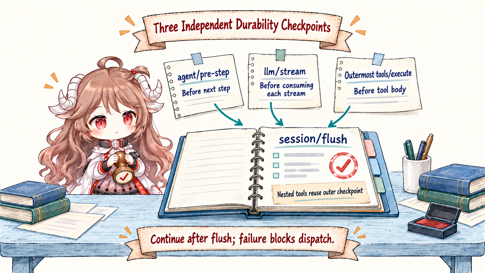
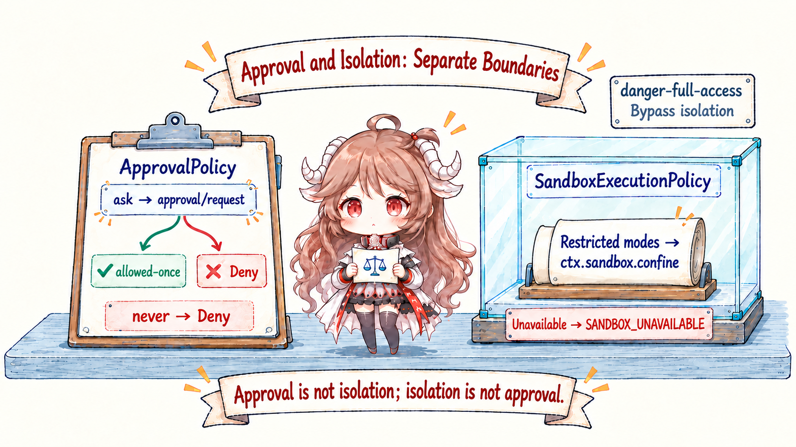
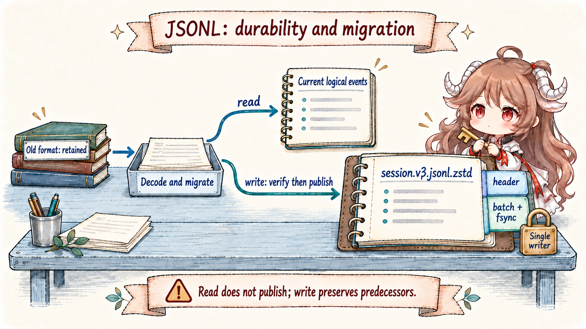
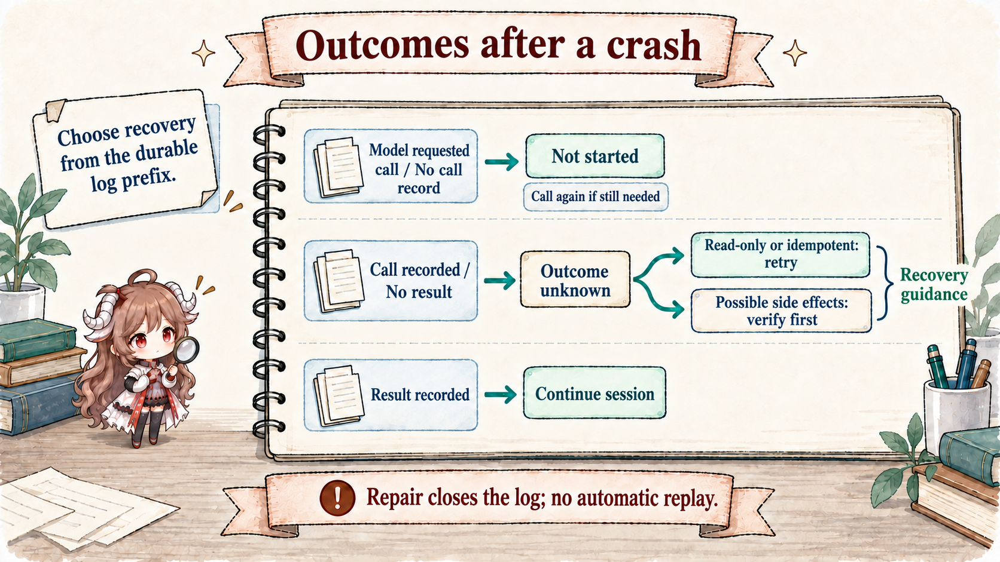

The most dangerous tool-call illusion is treating await tool.execute() as the only fact. A payment, message, or file mutation has at least four moments: the model emits a call; the runtime durably records that it is preparing the call; the external world receives the action; and the runtime durably records the result. A process can exit between any two.
DSH does not promise exactly-once effects. It does something more honest: SessionEvents retain intent and outcome, a checkpoint policy forces durability before side effects, approval and sandboxing govern separate boundaries, and repair classifies a crash tail as either “not started” or “outcome unknown.”
Reading contract.After this chapter, you should be able to explain why durable tool/call precedes the tool body; why append() is not a disk guarantee; where ask, never, and allowed-once take effect; why approval cannot replace sandboxing; and why TOOL_OUTCOME_UNKNOWN must never trigger a blind side-effect replay.
Evidence boundary.This chapter is pinned to ddefc45. The first-party JSONL backend and checkpoint policy compose the durability route described here. Custom backends, answerers, sandbox providers, and third-party tools still have to honor their interfaces; source composition does not turn them into one transaction system.
1. Record the call before allowing execution
1.1 The assistant message and tool/call prove different things
The agent loop first appends the assistant message that contains tool calls. Then executeToolCalls() appends a tool/call event for each item before prepare and guard. Immediately before the actual tool body receives control, the tools/execute checkpoint makes that prefix durable. Once execution settles, tool/result enters the same event source.
The assistant message records the model proposal; tool/call records a call the scheduler began processing. Its log fields retain the raw argument string, while parsed arguments enter the execution context. The body cannot run before a successful flush, but background batching may persist the call earlier. A durable call does not prove dispatch began. It makes recovery conservatively acknowledge that the action might have happened.

1.2 The tool pipeline preserves a non-bypassable order
The tools runtime runs the tools/pre-execute waterfall first. A gate may allow, deny, ask, or cancel; the approval seam maps interaction into allowed-once, rejected, cancelled, or unavailable. A monotonic guard follows pre-execute so a weaker later decision cannot reopen a closed gate. Only then does tools/execute run, followed by the post hook.
The checkpoint policy intercepts only a top-level call: exec.agent is present while exec.parent is absent. Nested dispatch shares the outer checkpoint, avoiding repeated flushes without giving child tools a way around the top-level fact boundary.
ctx.on('tools/execute', async (exec, next) => {
if (exec.agent === undefined || exec.parent !== undefined) return next()
await ctx.sessions.flush(exec.agent.session)
if (exec.signal.aborted) return abortedBeforeDispatchResult()
return next()
})2. append is not durable
2.1 The persistence backend and checkpoint policy are separate capabilities
Session append() creates an atomic in-memory event commit; a persistence plugin may write behind. That separation allows backends to batch efficiently, but “visible in the log array” does not imply “readable after a crash.” session-checkpoint-policy independently defines semantic checkpoints: which prior events must cross storage before downstream work proceeds.
2.2 Three barriers protect three irreversible advances
agent/pre-step: the preceding facts become durable before another reasoning step starts.- The first
llm/stream: a lazy flush occurs immediately before the actual provider request, avoiding synchronization when no network action occurs. - The outermost
tools/execute: the prefix containingtool/callis durable before the tool body sees control.
session/flush finishes before the downstream adapter or tool body; failure is fail-closed. Cancellation while a flush is pending returns ABORTED_BEFORE_DISPATCH instead of pretending the tool ran. That order gives “durable call, no result” a stable meaning.
3. Approval and sandboxing solve different problems
3.1 Approval decides whether this occurrence is allowed
user-approval exposes the channel-neutral one-shot request ctx.approval.request(req). ApprovalPolicy has ask and never: ask dispatches approval/request, while never rejects before interactive dispatch. The request requires an open turn and records paired approval/asked and approval/decided audit events. The model does not read those events, but sees the tool outcome and the current policy snapshot appended after retained history.
A missing answerer, answerer failure, or cancellation fails closed. A logged approval/policy can override configuration, with the last event winning. An audit append failure rejects the request instead of returning an unlogged grant. Policy changes also append a sourced notice for the next step instead of rewriting the stable request prefix. The seam intentionally ships no built-in answerer, no “allow always,” and no full tool arguments in the request. It remains narrow and auditable.
3.2 Sandboxing decides how an allowed action may run

SandboxProvider confines read-only and workspace-write execution; ctx.sandbox.confine(argv, policy) returns wrapped argv and enforcement completeness. No usable backend means SANDBOX_UNAVAILABLE. danger-full-access explicitly bypasses confinement and lets the consumer spawn the original argv; it is not a sandbox-protected mode.
The local provider prefers bubblewrap and then Landlock on Linux, Seatbelt on macOS, and an ACL/restricted-token path on Windows; Windows and Landlock may report partial coverage. This is same-host filesystem-effect confinement, not a container or microVM. User approval does not grant unlimited system access, and sandboxing does not imply that a user authorized the command.
4. JSONL turns a checkpoint into a recoverable prefix
4.1 One header frame, then one frame per durable batch

The JSONL backend currently writes session.v3.jsonl.zstd; session.jsonl.zstd names historical v0. Each generation still has one checksummed header frame followed by durable batch frames, with raw JSONL available. The storage handle owns the mutation sequence and live-event buffer: an internal fixed 200ms window coalesces events (it is no longer configurable), while session/flush bypasses the wait and drains the backend. An in-memory append is not an fsync.
4.2 Initial publication, append failure, and a torn tail have explicit boundaries
create(header) returns a write handle without creating a file. The first append writes and fsyncs the header and events in a temporary file; explicitly flushing an empty session also publishes a header-only file. POSIX publishes by no-overwrite hard link and fsyncs the parent directory, while Windows uses write-through rename. Later batches fsync independently, and caught write or sync failures truncate to the prior length.
Reading retains complete decoded records from a torn final frame. Before its next batch, a write handle truncates torn bytes and durably rewrites those records; resume appends required synthetic closers. Checksum, decompression, or structural corruption in a complete frame refuses recovery. The write handle is exclusive in-process, with a kernel lock across instances and processes: POSIX uses flock on session.lock, while Windows uses a named semaphore. Process exit releases the lock; a live but wedged holder still excludes another writer.
4.3 Reading an old format and publishing a new one are separate operations
The backend selects the highest canonical generation number; its migration publication path separates inspection from publication. open(id, 'read') decodes, migrates, and validates supported historical formats into current logical events without publishing a file. open(id, 'write') encodes a same-directory temporary file, verifies it in a Worker Thread, rechecks the source revision, and publishes the current generation without overwrite. The source remains byte-identical. Source drift rejects publication instead of overwriting newer history with stale preparation.
Thus session.v3.jsonl.zstd is the current write target, while predecessors are migration evidence, not automatic downgrade copies. Migration preserves the configured compression and does not convert between zstd and raw JSONL. The backend also does not delete session files.
5. Crash repair must distinguish not-started from outcome-unknown
5.1 The durable prefix supplies evidence for recovery

| Durable prefix before crash | Repair result | Recovery guidance |
|---|---|---|
Assistant contains a call; no tool/call | TOOL_NOT_STARTED | Dispatch again if the action is still needed |
tool/call exists; no tool/result | TOOL_OUTCOME_UNKNOWN | Retry read-only or idempotent calls; otherwise first query external state or ask the user |
Both tool/call and tool/result exist | Completed prefix | Resume from the next step |
repair.ts synthesizes the necessary tool result, step/end, and interrupted turn/end while preserving continuous sequence numbers. Repair only closes the log: it neither replays tools automatically nor enforces quarantine. Guidance in the synthetic error exposes uncertainty to the model and runtime, leaving the next action to tool semantics.
5.2 callId is an idempotency hinge, not exactly-once magic
For side-effecting tools, DSH recommends forwarding exec.callId as an idempotency key when the external system supports one. An unknown outcome can then converge through lookup or same-key retry. When the target offers no idempotency, query, or transaction semantics, the local log cannot prove an action occurred once. Read-only or naturally idempotent calls can recover more aggressively; payment, messaging, and deletion must remain conservative.
6. Engineering consequences of this route
- First-party durability needs both backend and policy.Persistence without checkpoints may lag the effect; a policy backed by a fake flush protects nothing.
- Approval is not sandboxing.One answers “did the user agree?” and the other “what can the process touch?” Both boundaries matter.
- Fail-closed is an availability tradeoff.A missing answerer, sandbox, or flush loses an opportunity instead of silently widening authority or creating an inexplicable action.
- Recover unknown outcomes according to tool semantics.“No local result” never implies “nothing happened remotely.”
- Custom tools should propagate callId.Connecting local identity to an external idempotency key is what makes at-least-once risk verifiable.
Part V examines another apparently harmless mutation: how compaction replaces the model-visible surface and prunes old tool results while the raw log and request header still reconstruct a request.
Source references
- session-checkpoint-policy README and implementation: three durability checkpoints, the top-level tool boundary, and cancellation semantics.
- tool-calls.ts and the tools runtime: call-event, gate, execute, and result ordering.
- user-approval README: one-shot decisions, audit events, and fail-closed outcomes.
- sandbox contract and local provider: policy modes, platform backends, and limits.
- session-persistence-jsonl README: frames, batches, fsync, publication, and torn-tail recovery.
- repair.ts: conservative repair of open tools, steps, and turns.